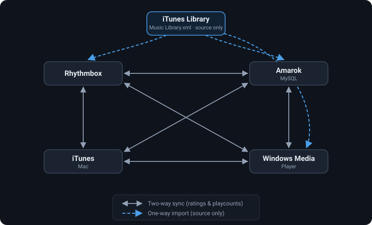

Transfer your ratings and playcounts between music players — iTunes, RhythmBox, Amarok, and Windows Media Player.
Two-way sync · iTunes (Mac) · RhythmBox · Amarok · WMP
iTunes Music Library.xml file to Linux if copying from iTunes. If going to or from Amarok or RhythmBox, skip this step.iTunesToRhythm.py -w -a ITunes\ Music\ Library.xml ~/.local/share/rhythmbox/rhythmdb.xmlitunes as the source or destination — so you could, for example, import from Amarok straight into iTunes. On Windows, Windows Media Player is supported by using wmp as the source or destination.
Copy statistics from RhythmBox to an Amarok MySQL database, excluding ratings:
iTunesToRhythm.py --noratings -a ~/.local/share/rhythmbox/rhythmdb.xml mysql -s musicserver -d amarok -u amarokuser -p verysecretCopy ratings and playcounts from Amarok to iTunes on a Mac:
iTunesToRhythm.py mysql -s musicserver -d amarok -u amarokuser -p verysecret itunesUsage: iTunesToRhythm [options] <inputfile>|itunes|mysql|wmp|amazonmusic <outputfile>|itunes|mysql|wmp|amazonmusic
Options:
-h, --help show this help message and exit
-c, --confirm confirm every match
-w, --writechanges write changes to destination file
-a, --disambiguate prompt user to resolve ambiguities
-l, --fastandloose ignore differences in file names when a file size
match is made against a single song; will not
resolve multiple matches
--noplaycounts do not update play counts
--noratings do not update ratings
--twoway sync both sides, giving precedence to the copy with
the higher play count
--dateadded update dates (iTunes to RhythmBox on Linux only)
--useSongTitle match songs by title instead of file size
Amarok connection options:
Options for connecting to an Amarok MySQL remote database
-s SERVERNAME, --server=SERVERNAME
host name of the MySQL database server
-d DATABASE, --database=DATABASE
database name of the Amarok database
-u USERNAME, --username=USERNAME
login name of the Amarok database
-p PASSWORD, --password=PASSWORD
password of the useritunes uses a running iTunes instance for synchronization — on macOS (via appscript) or on Windows (via the iTunes COM API). Use wmp for Windows Media Player and amazonmusic to read from Amazon Music.
Each backend can be read (used as a source). Most can also be written (used as a destination):
itunes)itunes)rhythmdb.xml path)mysql)wmp)amazonmusic). Best-effort: it scrapes the Amazon Music desktop app's local cache (Windows only), so it sees only cached tracks and can break when the app changes.Two-way synchronization is available with the --twoway flag, which gives precedence to the copy with the higher play count.
Found a bug or have a feature request? Please open an issue on GitHub. The source lives at github.com/esanbock/ITunesToRhythm.